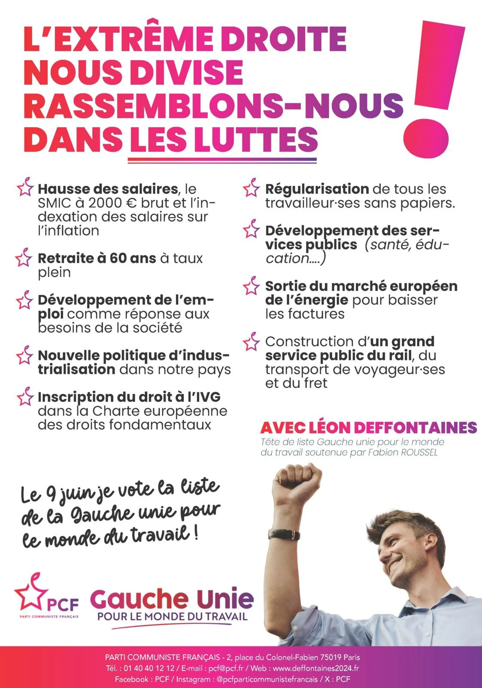
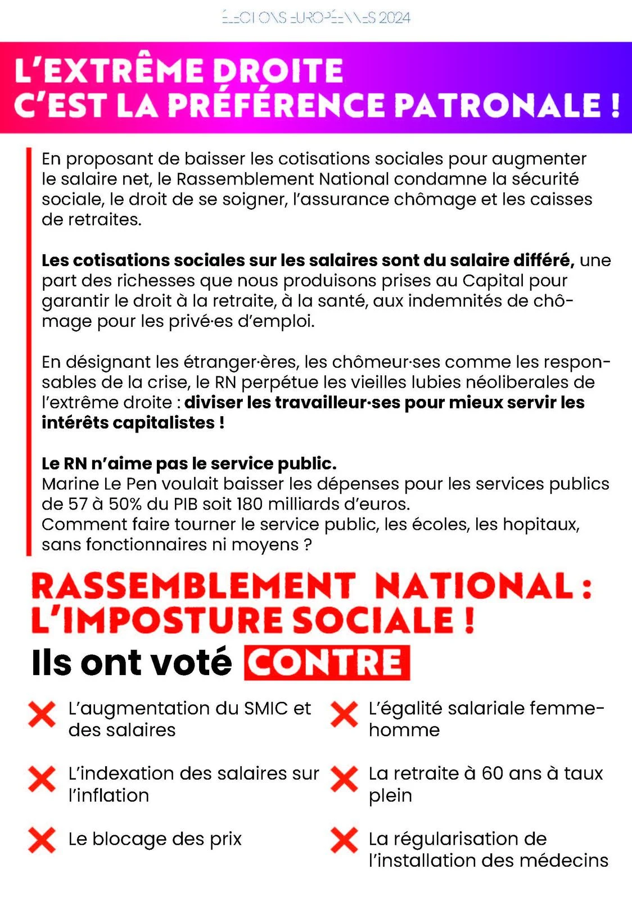

Publication d’archives
L'EXTREME DROITE C'EST LA PRFERENCE PATRONALE !
Date indiquée par Facebook · 6 juin 2024
Texte conservé avec la publication
L'EXTREME DROITE C'EST LA PRFERENCE PATRONALE !
LE 9 JUIN, JE VOTE POUR LE MONDE DU TRAVAIL AVEC LA LISTE GAUCHE UNIE DE LEON DEFFONTAINES !
#europeennes2024
#deuxsevres
#GaucheUnie


Sources
Archive rouge · export Facebook · AR-0002-FB-01366
À lire aussi · Une raison de plus de voter #GaucheUnie le 9 juin aux #electionseuropeennes2024